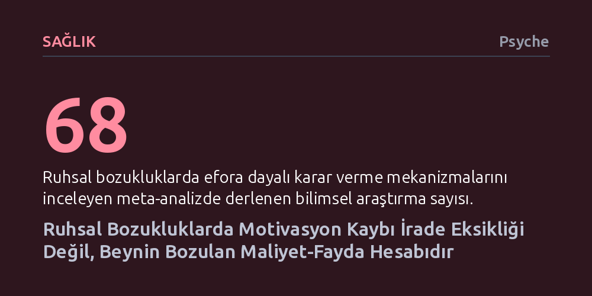

SAGLIK · Psyche · 2026-10-16
Depresyon, şizofreni ve bipolar bozukluktaki motivasyon eksikliği tembellikten değil, beynin efor ile ödülü tartan karar mekanizmasının bozulmasından kaynaklanıyor. 68 çalışmayı inceleyen meta-analiz, bu aksaklığın her psikiyatrik tanıda farklı bilişsel ve duygusal dinamiklerle işlediğini gösteriyor.
Harekete geçemeyen insanları veya kendimizi iradesizlikle suçlamak yerine, beynin efor-ödül terazisindeki görünmez bir aksaklığa odaklanarak çok daha şefkatli ve etkili çözümler üretilmesini sağlar.

Bir mesaja dönmek, duşa girmek, markete gitmek veya bir arkadaşın aramasını yanıtlamak... Normalde birkaç dakikada halledilen bu sıradan işler, kimi günler aşılması imkansız dağlar gibi hissettirebilir. Kişi harekete geçemediğinde çevresindekiler —ve çoğu zaman kişinin kendisi— durumu hızla iradi bir zafiyetle etiketler: üşengeçlik, hedefsizlik, tembellik. "Sadece biraz kendini toplaman gerek" cümlesiyle özetlenen bu yüzeysel yaklaşım, niyet etmekle eyleme geçmek arasında sessizce çalışan devasa bir psikolojik süreci tamamen ıskalar.
Günlük dilde motivasyon dense de bu mekanizma dolu ya da boşalan bir iç yakıt deposu gibi işlemez; arka planda durmaksızın çalışan üç ayaklı bir maliyet-fayda analizidir. İnsan beyni her an üç kritik soruyu tartar: Bu hedefe ulaşmak ne kadar efor gerektirecek? Karşılığında elde edeceğim ödül bu zahmete değer mi? Ve bu ödülü gerçekten kazanma ihtimalim nedir? Bizi tükenmekten ve boşa çabalamaktan koruyan bu görünmez terazi bozulduğunda, dışarıdan sadece hareketsizlik ve kayıtsızlık görünür.
Bilim insanları, zihnin bu kapalı kapılar ardındaki karar sürecini incelemek için efora dayalı karar verme testleri geliştirdi. Bu deneylerde katılımcılardan kolay ama az ödüllü bir seçenek (örneğin baskın işaret parmağıyla bir tuşa 30 kez basarak 1 dolar almak) ile zor ama yüksek ödüllü bir seçenek (serçe parmağıyla 100 kez basıp daha büyük bir para kazanmak) arasında seçim yapmaları istenir. Testler boyunca ödülün boyutu, gereken efor ve ödülü alma olasılığı (%12, %50 ya da %88 gibi oranlarla) sürekli değiştirilir. Araştırmacılar, kişinin daha zorlu görevi ne zaman zahmete değer bulduğunu ölçerek terazinin nasıl çalıştığını haritalandırır.
Matthias Pillny ve meslektaşlarının 68 araştırmayı bir araya getirdiği meta-analiz, psikiyatrik bozukluklarda bu terazinin belirgin biçimde bozulduğunu ortaya koydu. Şizofreni, bipolar bozukluk ve depresyon tanısı almış bireyler, sağlıklı kontrol gruplarına kıyasla bir ödül uğruna efor sarf etmeyi çok daha nadir tercih ediyordu. Bu düşüş özellikle şizofreni ve bipolar bozuklukta belirgindi; depresyonda ise daha mütevazı ama istatistiksel olarak kesin bir düzeydeydi. Normal şartlarda ödül büyüdükçe veya kesinleştikçe insanlar eforlarını artırırken, bu klinik gruplarda ödülün büyümesi davranışı aynı oranda harekete geçiremiyordu; içsel maliyet-fayda hesabı dengesini yitirmişti.
Dışarıdan bakıldığında tüm klinik gruplar benzer bir isteksizlik sergilese de hesaplamalı modelleme yöntemleri, aksaklığın her bozuklukta farklı bir bilişsel dişliden kaynaklandığını gösteriyor. Şizofrenide temel sorun, durumun içerdiği birden fazla bilgiyi tek bir potada eritememekten doğuyor. Çalışma belleği ve zihinsel işlemleme hızındaki aksaklıklar; harcanacak eforu, beklenen ödülü ve olasılığı aynı anda akılda tutup karşılaştırmayı neredeyse imkansız hale getiriyor. Örneğin bir işe başvurmak isteyen şizofreni hastası, telefon etmenin zahmetini, olası iş teklifinin getirisini ve kabul edilme ihtimalini zihninde birleştiremediğinde durum bunaltıcı bir yüke dönüşüyor ve en az çaba gerektiren eylemsizlik seçiliyor.
Depresyonda ise tablo bambaşka bir mekanizmaya işaret ediyor. Burada sorun ödülün çekiciliğini tamamen kaybetmesi değil, efor maliyetinin orantısız biçimde ağır algılanmasıdır. Kişi bir arkadaşıyla buluşmanın kendisine iyi geleceğini, hatta keyif vereceğini bilir; ancak giyinmek, kapıdan çıkmak, toplu taşımaya binmek ve sohbet etmek gözünde aşılması imkansız birer duvara dönüşür. Ödül hala oradadır ama ona giden yolun maliyeti zihinde katlanarak büyümüştür.
Bipolar bozuklukta ise mekanizma hastalığın mevcut evresine göre yön değiştirir. Depresif evre unipolar depresyonu andırıp eforu ezici kılarken, manik veya hipomanik evrelerde tam tersi bir aşırılık gözlenir. Bu dönemde kişi, ödülün gerçekleşme olasılığı nesnel olarak çok düşük olsa bile dizginsiz bir efor harcama isteği duyar; günlerce uyumadan bir iş projesi üzerinde çalışabilir ya da karşılığı meçhul bir fikir uğruna varını yoğunu satabilir. Çünkü manide eforun getirdiği hiçbir maliyet zihne yük gibi görünmez.
Bu mekanik farklılıklar, motivasyon kaybına tek tip reçetelerle yaklaşılamayacağını net biçimde ortaya koyuyor. Çözüm, terazinin nerede bozulduğuna bağlı olarak kişiye özel kurgulanmalıdır. Kimi bireyler için ödülü daha somut, yakın ve hissedilir kılmak işe yarar; arkadaşını görmenin iyi geleceği yönündeki soyut düşünceyi 'on dakika sohbet ettikten sonra kendimi daha az yalnız hissedeceğim' netliğine taşımak motivasyonu tetikleyebilir. Efor maliyetinin ağır bastığı durumlarda ise eylemleri mikro adımlara bölmek gerekir. Bilgi işlemleme zorlukları yaşayanlarda ise dikkat ve belleği güçlendiren bilişsel onarım programları teraziyi yeniden işler hale getirebilir.
Bu bulguların klinik alan kadar günlük yaşam için de dönüştürücü bir mesajı var. Harekete geçmekte zorlanan birine —veya bizzat kendimize— 'bir başlasan açılırsın' ya da 'biraz gayret et' demek yalnızca suçluluk ve yetersizlik hissini besler. Bunun yerine meraklı ve şefkatli bir yaklaşım benimsemek gerekir: Şu an gözde büyüyen şey tam olarak nedir? Efor mu çok ağır geliyor? Ödül mü çok uzakta ve belirsiz? Yoksa planlamak mı zihni tıkıyor? Motivasyon doğuştan gelen ve değişmeyen bir ahlaki güç değil; yorgunluk, biyoloji ve zihinsel yükle dalgalanan dinamik bir hesaplama sürecidir. Bazen bir mesajın yanıtsız kalması tembellikten değil, arka plandaki hassas terazinin ayarının kaçmasından ibarettir.